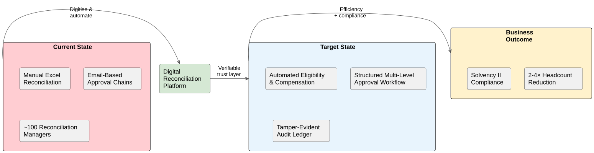
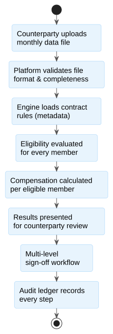

1. Executive Summary
A UK-based reinsurance firm manages longevity and pension risk contracts with multiple independent insurance company counterparties across Europe and beyond. Each month, counterparties submit data files; the reinsurer’s team of approximately 100 reconciliation managers manually applies contract rules in Excel, exchanges proposals and adjustments via email, and coordinates multi-round sign-off — all without a shared digital workspace.
This process is labour-intensive, error-prone, and cannot scale. Every new counterparty relationship multiplies headcount proportionally. Trust between independent entities is established entirely through repeated human verification. Compliance evidence for Solvency II and FCA audits requires reconstructing email threads and Excel version histories — a manual, slow, and person-dependent task.
We propose building an inter-company reconciliation platform that replaces the manual Excel-and-email process with a secure, auditable digital workspace. The platform automates eligibility calculation, structures the approval workflow, and produces tamper-evident audit records that satisfy regulatory requirements — without blockchain overhead.
The investment is ~$758K (~£592K at current rates) over 9.5 months. The first counterparty goes live at month 7.5. At a conservative 2× headcount reduction (100 → 50 reconciliation managers), the platform pays for itself within approximately ~15 months of project kickoff — accounting for delivery, counterparty onboarding ramp, and gradual savings realisation.
2. Business Challenge
The following pressures are limiting operational efficiency and constraining growth despite a successful and growing reinsurance book:
-
Reconciliation is entirely manual. Every monthly cycle — file receipt, eligibility calculation, proposal exchange, negotiation, and sign-off — is performed in Excel and communicated via email. There is no shared digital workspace.
-
Headcount scales linearly with counterparty growth. Each new counterparty relationship adds proportional reconciliation manager headcount. The current team of ~100 managers is a direct function of portfolio size, not process efficiency.
-
Inter-company trust depends on human verification. Counterparties are independent, often multinational entities. Trust is established by armies of people manually verifying files, calculations, and approvals. This cannot be automated without a verifiable digital trust layer.
-
Compliance evidence is fragile. Solvency II and FCA audits require demonstrating that every calculation, adjustment, and sign-off is traceable and tamper-evident. Today, this evidence must be reconstructed from email threads and Excel version histories — a process that depends on specific individuals and their filing discipline.
-
Contract knowledge is concentrated in individuals. Reconciliation formulas live in personal Excel files. When a reconciliation manager leaves, the logic behind their contract calculations may be irreproducible.
-
Multi-round negotiations are untracked. Propose → dispute → adjust → re-send cycles happen over email with no formal state tracking. Errors discovered late cause expensive correction rounds in subsequent months.
3. Our Recommendation
We recommend building a digital reconciliation platform in 4 phases over 9.5 months.
The platform provides a secure portal where counterparties upload monthly data files, an automated engine that applies contract rules to determine eligibility and calculate compensation, and a structured approval workflow that replaces email-based negotiation with auditable, multi-level sign-off. Every file upload, calculation, approval, and adjustment is recorded in a tamper-evident audit ledger — providing Solvency II-grade compliance evidence that any party can independently verify.
The first counterparty goes live at month 7.5 — before the full platform is complete. This is intentional: it creates an early operational checkpoint and validates the platform against a real monthly reconciliation cycle while the remaining capabilities (regulatory reporting, data residency support, batch counterparty onboarding) are still being built.
Contract rules are stored as structured metadata — not hardcoded logic. When a new contract type is introduced, the platform adapts without code changes. This eliminates the dependency on individual reconciliation managers holding formula knowledge in private Excel files.
The platform is designed as a custodial model: the reinsurer hosts and operates the platform as the trusted party, while counterparties interact through a secure portal with strict data isolation. This achieves the same trust guarantees as distributed approaches (such as blockchain) without the associated operational overhead — because the reinsurer is already the single custodian of the reconciliation process.
This engagement does not include: payment service provider integration (B2B money settlement is handled outside the platform), blockchain infrastructure, historical Excel record migration (closed cycles remain in existing archives), consumer-facing functionality, or changes to the counterparties' internal systems.

3.1. What Changes: Excel Formulas → Structured Rules
The following simplified example illustrates the core transformation. Today, a reconciliation manager maintains an Excel workbook per counterparty. The business logic — eligibility conditions, compensation rates, adjustment factors — is embedded in cell formulas that are undocumented, unversioned, and person-dependent.
Current state — an Excel workbook for a longevity swap contract:
| Member ID | Date of Birth | Date of Death | Annual Pension | Eligible? | Compensation |
|---|---|---|---|---|---|
LM-10042 |
12/03/1958 |
£28,400 |
|
|
|
LM-10043 |
05/11/1949 |
22/01/2026 |
£34,100 |
|
|
LM-10044 |
19/07/1962 |
£22,750 |
|
|
|
Hidden references: |
|||||
When a reconciliation manager leaves, the knowledge embedded in $K$1, $K$2,
and the conditional logic in columns E–F leaves with them. When the contract terms
change, every affected cell formula must be found and updated manually — across
every counterparty workbook that uses that contract type.
Target state — the same contract rules as structured metadata:
{
"contract_type": "longevity_swap",
"counterparty": "Eurolife Reinsurance SE",
"effective_date": "2026-01-01",
"version": "3.1",
"eligibility_rules": [
{ "field": "date_of_death", "operator": "is_null",
"label": "Member is alive" },
{ "field": "age_at_cycle_date", "operator": ">=", "value": 65,
"label": "Retirement age reached" }
],
"compensation_formulas": {
"alive": "annual_pension × base_rate × adjustment_factor",
"deceased": "annual_pension × mortality_rate × (days_survived / 365.25)"
},
"parameters": {
"base_rate": 0.0325,
"adjustment_factor": 1.00,
"mortality_rate": 0.0410
}
}The same business logic — readable, version-controlled, and auditable. When a contract term changes, a single parameter update propagates to every affected calculation automatically. When a new contract type is introduced, it is a new metadata entry — not a new Excel workbook with manually crafted formulas.
The platform’s eligibility engine reads these rules and evaluates them against the uploaded data files — producing the same results the Excel formulas produce today, but without manual intervention, without hidden cell references, and with a complete audit trail of every calculation.

4. Expected Business Outcomes
4.1. Paths to the 2–4× Headcount Reduction
The client’s target of reducing the reconciliation team from ~100 managers to 25–50 requires multiple efficiency levers working in concert. The platform is the enabling foundation that makes each lever operational. None of these levers can function without a shared digital workspace; all of them become available once it exists.
| Efficiency Lever | Mechanism | Estimated Impact | Delivery Phase |
|---|---|---|---|
Automated eligibility calculation |
Contract rules applied automatically to uploaded data files; eliminates manual Excel calculation for every monthly cycle |
Largest single efficiency gain — removes the core manual activity that drives headcount |
Phase 2 — month 5.0 onward |
Structured approval workflow |
Multi-level sign-off with counter-proposal support replaces untracked email chains; each cycle follows a defined workflow with clear responsibilities |
Reduces negotiation cycle time from weeks to days; eliminates lost-email and version-confusion errors |
Phase 2 |
Tamper-evident audit ledger |
Every file, calculation, approval, and adjustment recorded in a verifiable, immutable record; eliminates manual evidence reconstruction for regulatory audits |
Solvency II / FCA audit preparation reduced from weeks of manual work to automated report generation |
Phase 1–2 |
Codified contract knowledge |
Contract rules stored as structured, version-controlled metadata — not in personal Excel files |
Eliminates key-person risk; new reconciliation managers can operate without undocumented institutional knowledge |
Phase 1–2 |
Counterparty self-service portal |
Counterparties upload files, review proposals, and approve cycles through a secure web portal — no email exchange required |
Reduces coordination overhead per counterparty; onboarding new counterparties becomes a configuration task, not a staffing decision |
Phase 3 |
Cross-cycle adjustment tracking |
Prior-month corrections are tracked as first-class records linked to their originating cycle — not buried in email threads |
Reduces error-correction overhead and prevents adjustment disputes |
Phase 2–3 |
4.2. Post-Platform Staffing Model
The table below illustrates how the remaining reconciliation team operates once the platform is fully adopted. This is not a restructuring plan — it is a model for understanding what roles remain essential and how the team’s focus shifts from manual processing to exception management and relationship oversight.
| Role | Conservative (2×) | Optimistic (4×) | Primary Responsibilities |
|---|---|---|---|
Exception & Complex Contract Managers |
15–20 |
8–10 |
Handle contracts too complex for the expression tree engine; manage non-standard counterparty arrangements; resolve disputes escalated from the approval workflow |
Counterparty Relationship Managers |
10–15 |
5–8 |
Serve as named contacts for each counterparty; coordinate onboarding, manage quarterly reviews, handle ad-hoc queries outside the monthly cycle |
Platform Operations & Onboarding |
5–8 |
3–5 |
Configure new counterparty tenants and file normalisation mappings; maintain contract rule metadata; manage the onboarding pipeline (1–2 new counterparties per month) |
Compliance & Audit |
3–5 |
2–3 |
Monitor audit ledger health; prepare quarterly compliance reports; coordinate with PRA/FCA audit requests; manage regulatory export and retention |
Team Leads & Process Owners |
3–5 |
2–3 |
Oversee cycle deadlines; manage escalation from the automated workflow; own the reconciliation process and its continuous improvement |
The shift is structural: today’s team spends the majority of its time on routine calculation, file exchange, and manual verification. The platform automates these activities. The remaining team focuses on judgement-intensive work — exceptions, relationships, compliance, and continuous improvement — where human expertise adds value that automation cannot replace. |
|||
4.3. Cost Savings Scenarios
The projections below focus on headcount reduction — the most direct and measurable impact of this platform. Additional value from faster cycle times, reduced audit preparation effort, and lower counterparty onboarding cost is not projected here, as it depends on operational adoption beyond the initial rollout. The £55,000 average salary is illustrative and based on UK market rates for reconciliation professionals; projections scale proportionally to actual compensation figures, calibrated against internal HR data during the Investigation Period.
| Scenario | Mechanism | Est. Annual Saving | Break-Even |
|---|---|---|---|
Conservative (2× reduction) |
100 → 50 reconciliation managers; platform handles routine calculations and workflow; remaining team focuses on exceptions and counterparty relationships |
~£2,750K/year |
~15 months from project kickoff (inc. delivery + adoption ramp) |
Optimistic (4× reduction) |
100 → 25 reconciliation managers; platform handles the full cycle end-to-end for standard contracts; team focuses on complex/non-standard counterparties only |
~£4,125K/year |
~13 months from project kickoff (inc. delivery + adoption ramp) |
Break-even timelines include the full delivery period (9.5 months), counterparty onboarding ramp (~10 months at 1–2 per month), and the gradual savings curve as counterparties adopt the platform. Once all counterparties are live, the ~£2,750K/year conservative saving recovers the ~£592K development cost (at £1 = $1.28) in ~3.3 months. The £55,000 average salary is calibrated against actual compensation data during the Investigation Period. |
|||
5. Our Approach
Five principles guide how this engagement is structured:
-
Trust by design, not by headcount. The platform replaces human verification with a verifiable digital trust layer. Every file, calculation, and approval is recorded in a tamper-evident audit ledger that any party — including regulators — can independently verify. This is not security theatre; it is the architectural foundation that makes headcount reduction possible without reducing trust.
-
Value before completion. The first counterparty goes live at month 7.5 — before regulatory reporting and batch onboarding are complete. Real operational data from a live reconciliation cycle validates the platform against actual contract complexity, so the final phase can incorporate what was learned rather than launching cold.
-
Contract flexibility without code changes. Contract rules are stored as structured metadata evaluated by a generic engine. When a new contract type is introduced — different formulas, different eligibility criteria, different compensation structures — the platform adapts through configuration, not development. This eliminates the dependency on specialist knowledge locked in Excel files.
-
No disruption to existing operations. The current reconciliation process continues unchanged during delivery. The platform is built alongside existing operations — counterparties are onboarded one at a time, starting with a pilot. There is no big-bang switchover, no process freeze, and no risk to in-flight cycles.
-
Investigate before we build. The first 2–4 weeks after signing are dedicated to structured investigation — documenting current reconciliation workflows, extracting contract rule logic from Excel files, validating data quality assumptions, and identifying additional improvement opportunities. Nothing is committed to build until the investigation confirms the plan. This protects the investment and eliminates the largest source of project surprises.
6. Investigation Period
Before development begins, the first 2–4 weeks of the engagement are dedicated to structured investigation. This is built into the scope and timeline — it begins on the first week after signing and carries no separate cost.
| Area of Investigation | Outcome |
|---|---|
Current reconciliation workflow documentation |
We map the end-to-end monthly cycle: file receipt, eligibility calculation, proposal exchange, negotiation rounds, and sign-off. This surfaces manual workarounds, undocumented process variations, and additional improvement opportunities beyond the initial scope. |
Contract rule extraction |
Working with reconciliation managers, we extract the rule logic from the 3 most common contract types and translate it into structured, version-controlled metadata. Side-by-side validation against historical Excel output confirms the translation is correct. This is the critical path item — the platform’s value depends on accurate rule capture. |
Data quality and file format baseline |
We audit a representative sample of counterparty data files to assess format consistency, data completeness, and edge cases. This establishes the ingestion complexity before the build phase begins and eliminates the largest source of budget uncertainty. |
Compliance requirements validation |
We review Solvency II Article 259 record-keeping requirements and FCA audit expectations with the compliance team. The audit ledger design is validated against actual regulatory obligations — not assumptions. |
Risk identification and mitigation planning |
We surface and assess risks specific to the environment — counterparty technical readiness, data residency obligations, contract complexity outliers — and prepare mitigation options for each. A risk register and validated Phase 1 plan are delivered, not a generic estimate. |
The investigation concludes with a written report: a validated Phase 1 plan (with any necessary adjustments), risk register, compliance validation summary, representative contract rule sets, and identified improvement opportunities. If the investigation surfaces a significant change to scope or approach, we present options before the build phase begins — the client stays in control at every decision point.
7. Investment Summary
| Item | Detail |
|---|---|
Development investment (CAPEX) |
~$758K / ~£592K (inclusive of 20% risk buffer; converted at illustrative £1 = $1.28) |
Monthly infrastructure cost (OPEX) |
$985–$1,800/month (cloud infrastructure; higher end includes disaster recovery replication) |
3-year total cost of ownership |
~$793K–$823K (CAPEX ~$758K + 3 years OPEX at $985–$1,800/month) |
First counterparty live |
Month 7.5 |
Full go-live |
Month 9.5 |
Delivery timeline |
9.5 months across 4 phases |
Team |
6 specialists (architecture, development, security/compliance, quality assurance) |
Break-even (conservative scenario) |
~15 months from project kickoff (inc. 9.5 months delivery + counterparty adoption ramp; ~3.3 months once all counterparties are live) |
All costs are quoted in USD; GBP equivalents use an illustrative rate of £1 = $1.28, confirmed during the Investigation Period. The ~$758K CAPEX is positioned within the innovation initiative budget. Infrastructure costs are modest relative to the headcount savings potential and can be absorbed into normal operating budgets. |
|
8. Delivery Milestones
-
Month 1 — Kickoff & Investigation: Project kickoff, current workflow documentation, contract rule extraction workshops, compliance validation, cloud platform provisioned, risk register delivered.
-
Month 2.5 — Infrastructure & First Contracts: Secure portal infrastructure operational, first contract rules configured and validated against Excel output, counterparty file upload and processing tested end-to-end.
-
Month 5.0 — Eligibility Engine & Approval Workflow: Automated eligibility calculation operational for configured contracts, multi-level approval workflow tested, tamper-evident audit ledger verified.
-
Month 7.5 — First Counterparty Live (operational checkpoint): First counterparty completes a full monthly reconciliation cycle on the platform. Calculations validated against parallel Excel run. Audit ledger output reviewed by compliance team.
-
Month 9.5 — Full Go-Live: Regulatory export service, data residency support, second counterparty batch onboarded, performance tested at month-end peak volumes.
-
Post go-live — Ongoing Operations: Monthly platform review, counterparty expansion at 1–2 per month, quarterly compliance review with the internal team.
9. Key Risks
| Risk | Mitigation |
|---|---|
Contract rule complexity exceeds structured metadata capability |
The Investigation Period extracts and validates the 3 most common contract types before any build commitment. If a contract type cannot be expressed in the structured rule format, it is flagged as requiring custom handling — scope and cost impact are presented as options before Phase 2 begins. |
Counterparty technical readiness for portal adoption |
Counterparties are onboarded one at a time, starting with the most technically ready partner. A secure file transfer fallback is available for counterparties unable to use the web portal initially. The first counterparty is identified and their technical contact confirmed during the Investigation Period. |
Regulatory interpretation gap |
Solvency II and FCA audit requirements are validated with the compliance team during the Investigation Period — before the audit ledger is built. If requirements are more specific than assumed, the design is adjusted before Phase 2. |
Key-person risk during contract rule extraction |
Domain knowledge extraction workshops in Phase 1 produce documented, version-controlled rule sets. The platform itself removes the long-term dependency on individuals holding formula knowledge in private Excel files. |
Data residency obligations for international counterparties |
Phase 1 assumes all tenants are UK/EU-based. If a non-UK/EU jurisdiction is required before go-live, the infrastructure design supports regional deployment — scope and timeline impact are assessed when the requirement is confirmed. |
10. Why Work With Us
This proposal is the output of structured discovery — analysis of business context, domain research into reinsurance reconciliation, Solvency II compliance requirements, and the specific operational challenges of managing multi-party trust at scale. The approach, phasing, and cost model are specific to this organisation’s situation: a custodial B2B model, ~100 reconciliation managers, contract complexity concentrated in Excel, and an innovation initiative budget.
Our engagement model follows a documented methodology: Investigation → Architecture → Phased Delivery → Handover. Each stage produces reviewed artefacts that the client owns. The full solution design, cost breakdown, risk register, and technical architecture are available at the next stage — shared with the technical team once the engagement is agreed, not before.
Our team operates with advanced AI-assisted development practices embedded into every stage of delivery. Code generation, infrastructure-as-code scaffolding, automated testing, documentation, and architecture review are all accelerated through production-grade AI tooling — not as an experiment, but as a core part of our engineering workflow. This is how a focused team of 6 specialists delivers a platform of this scope in 9.5 months: AI amplifies each team member’s output across the full stack — backend logic, portal interfaces, security configuration, compliance documentation, and test coverage — without sacrificing quality or architectural rigour.
The Investigation Period is not a formality — it is the mechanism that protects the investment. Two to four weeks of structured discovery before any code is written eliminates the largest source of project surprises: assumptions about contract complexity, data quality, and regulatory requirements that turn out to be wrong.
Post-launch is in scope, not an afterthought. Counterparty onboarding continues after go-live at a pace of 1–2 per month. The platform is designed for the reinsurer’s operations team to manage independently once the engagement concludes.
11. Next Steps
| Step | Action | Owner |
|---|---|---|
1 |
Review and approve this proposal |
Client Leadership |
2 |
Sign engagement agreement |
Both parties |
3 |
Investigation Period begins (Week 1 after signing) — structured 2–4 week discovery covering: current reconciliation workflow mapping, contract rule extraction from Excel, data quality audit, compliance requirements validation (Solvency II Article 259, FCA), counterparty readiness assessment. Concludes with a written report and validated Phase 1 plan. |
Solution Architect + Client Compliance + Client Operations |
4 |
Phase 1 build kickoff — first available week after investigation report is delivered |
Solution Architect + Client IT |
A detailed solution design document (Level 2) — covering the full technical architecture, functional requirements, architecture decision records, risk register, and Gantt chart — is available for review by the technical team alongside or after this approval step.
Confidentiality Notice
This document has been prepared exclusively for the intended recipient and contains
proprietary methodology, commercial terms, and strategic analysis developed by the
consulting team. It may not be reproduced, shared with third parties, or used to
solicit competing proposals without the prior written consent of the originating
firm. All financial projections are indicative and based on industry benchmarks and
confirmed inputs as of the date of this document.